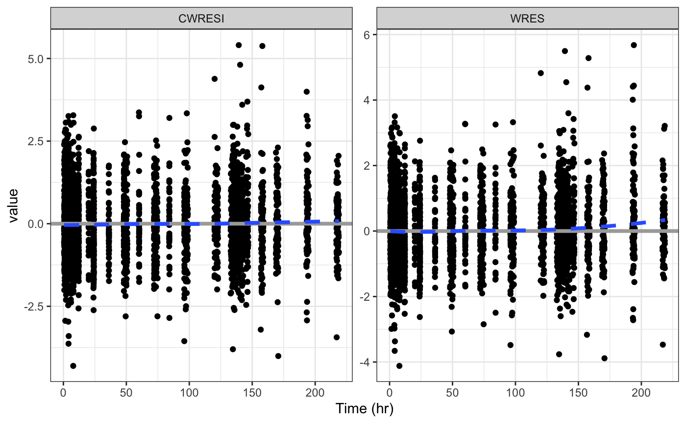
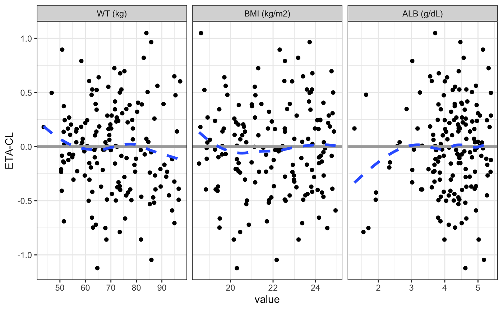
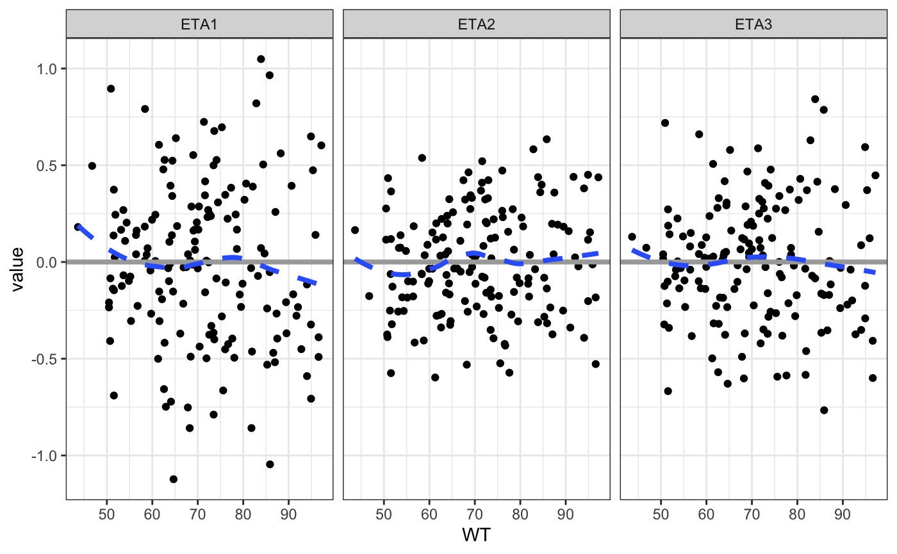

wrapped_plots.RmdThere is are example data sets embedded in pmplots
data <- pmplots_data_obs()
id <- pmplots_data_id()For most applications, pmplots does not reshape your data frame; it works with what you pass in. However, for some applications, it is convenient to have a diagnostic plot that is faceted by a categorical variable in the data set. This vignette demostrates the faceted plots that are available. This faceting support is for a focused set of plots only. Users should generally either create facets own or use the split_plot function for other applications.
wrap_res_time
Enter a vector of column names (or col_label) for the y argument
wrap_res_time(data, y = c("CWRESI", "WRES"))
wrap_eta_cont
Here, enter a vector for the x argument
wrap_eta_cont(
id,
x = c("WT//WT (kg)", "BMI//BMI (kg/m2)", "ALB//ALB (g/dL)"),
y = "ETA1//ETA-CL",
scales="free_x",
use_labels=TRUE
)
In this example, we enter labels along with column names and request that the labels be used for the shingle.
We can facet on x or y
wrap_eta_cont(
id,
x = c("WT", "ALB"),
y = c("ETA1", "ETA2", "ETA3"),
scales="free_x"
)